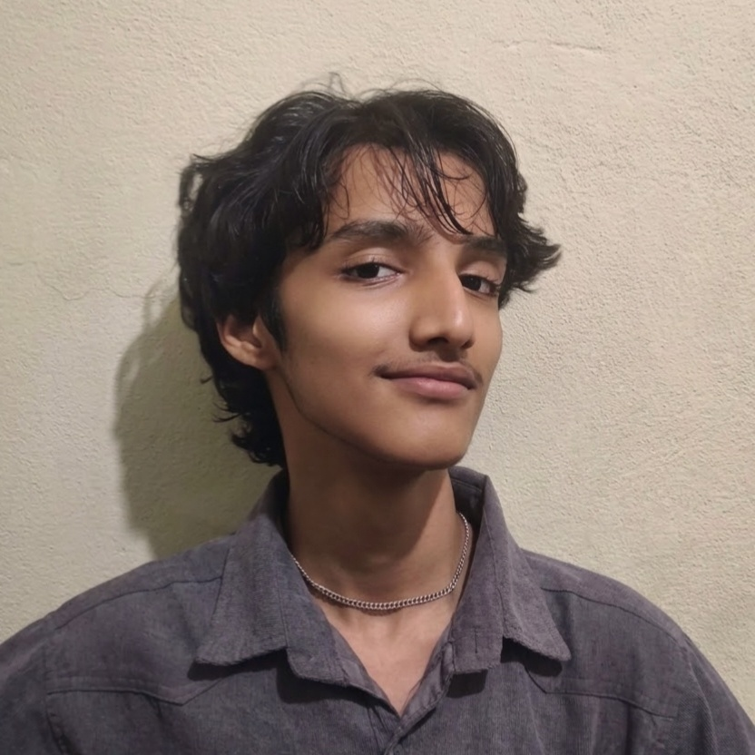

I harden systems,
then try to break them.

Hello, I am Nayush Ghimire, an 18-year-old, self-taught, security-minded developer. I spend most of my time inside a terminal locking down systems, picking apart the OWASP Top 10, and writing the scripts that hold it all together.
System Administration
Bash
Learning security by taking my own system apart
I'm currently working through a Bachelor's degree in Cybersecurity, but most of what I can actually point to comes from outside a classroom: hardening systems in virtualization labs, running audits, and building small applications specifically so I can attack and fix them.
I love making well-documented projects. Everything I build comes with clear writeups, and the projects on GitHub show the work rather than describe it.
- Python & Bash scriptingLinux automation
- Linux hardeningLUKS2 · TPM2 · Secure Boot
- Web app securityOWASP Top 10
- Virtualization labsKVM / libvirt
- CTFs & practical exercisesHTB · TryHackMe
Vulnerable vs. secure, side by side
OWASP Flask Demo
See on GitHub →A Flask application built in two parallel versions — one deliberately vulnerable, one properly defended — so the difference between broken and secure code is visible line by line, not just described in a writeup. Each issue is mapped to its OWASP Top 10:2021 category.
Hardened Linux systems
Hands-on hardening work treated as a real security project rather than a default install.
- LUKS2 full-disk encryption with TPM2 auto-unlock
- Secure Boot with custom enrolled keys
- Unified Kernel Images, btrfs subvolumes
- Regular full compromise and configuration audits
Virtualization labs
Using virtualization labs to master Linux hardening and test techniques without touching a host system.
- libvirt/KVM based virtual machines
- Isolated networking for safe experimentation
- Shared folders for host-to-VM workflows
How I got here
Started teaching myself Linux
Went all-in on the command line daily, rather than treating it as an occasional tool.
Moved from using Linux to hardening it
Rebuilt my system around encryption, Secure Boot, and real audits instead of default settings.
Started CTFs and practical exercises
Working through hands-on rooms and challenges on HackTheBox and TryHackMe, alongside self-study resources like Professor Messer and OverTheWire.
Now: Bachelor's in Cybersecurity
Studying formally while keeping the self-taught, project-first habit that got me here.